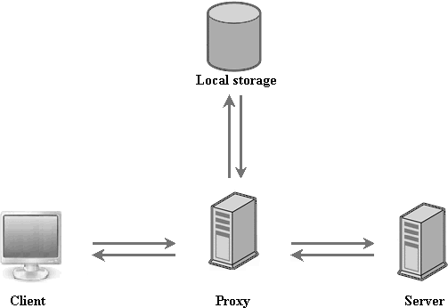

Offline storage
In this article we want to tell you how to make an application be accessible offline and don't depend on the state of the network.
Generally, to make an app work in the offline mode you should use the dhx.proxy component. The component allows you to send web requests via HTTP proxy and store the latest successful data files and unsuccessful web requests locally.

How does an application using dhx.proxy work?
Loading data
- Each time data needs loading, the app passes a request to the server via proxy-server. If the server is available - data is loaded from it and cached as the latest copy. If the server is unavailable - data is loaded from the local storage.
- Note that the local storage contains data just if the app was run with available connection to the Internet at least once.
CRUD operations
- When a user makes a request for update, it (the request) is passed to the server via proxy-server. If the request is satisfied - it updates the latest copy. If the request isn't satisfied - it's cached in the local storage.
- Each time a user makes a request, dhx.proxy checks presence of unsuccessful requests in the local storage. If there are any kept - they are passed to the server.
- As soon as an unsuccessful request is satisfied - it updates the latest copy and is removed from the local storage.
How to use dhx.proxy?
dhx.proxy is an easy-to-use component.
To start use it:
- ;
- set the dhx.proxy instance as:
- the save parameter of the object constructor;
- the url parameter of the load method.
var source = new dhx.proxy({ url: "../data/events_mobile.php", storage: dhx.storage.session }); dhx.ready(function(){ dhx.ui.fullScreen(); dhx.ui({ view: "scheduler", id: "scheduler", save: source }); $$("scheduler").load(source, "json"); });
Related sample: samples/03_offilne/01_offline.html
Initialization
dhx.proxy can be initialized in the following way:
var source = new dhx.proxy({ url: "./data.php", storage: dhx.storage.session });
The constructor takes 2 parameters:
- url - (url) defines the path to a php file that defines server side logic.
- storage - (dhx.storage.local, dhx.storage.session, dhx.storage.cookie) specifies the data storage type. It's an optional parameter. The default value - dhx.storage.local.